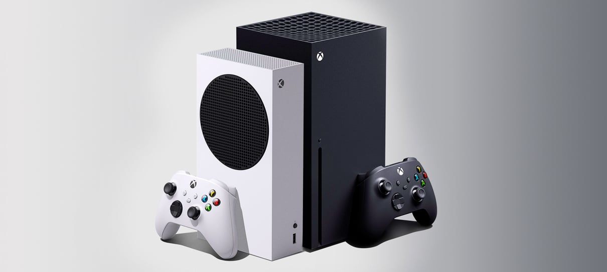

A Atual Geração: PlayStation 5 e Xbox Series X|S
Os consoles da nova geração trouxeram gráficos impressionantes, tempos de carregamento quase inexistentes e suporte a 4K e 120 FPS.
PS5 – Jogos Recomendados:
- Demon’s Souls – Um remake impressionante.
- God of War: Ragnarok – Continuação épica da jornada de Kratos.
- Spider-Man 2 – Um bom jogo do Homem-Aranha.

Xbox Series X|S – Jogos Recomendados:
- Halo Infinite – O retorno do Master Chief.
- Forza Horizon 5 – Um dos melhores jogos de corrida.
- Starfield – Uma nova jornada espacial da Bethesda.
Curiosidade: O Xbox Series S é o menor console já lançado pela Microsoft, focado em jogos digitais.